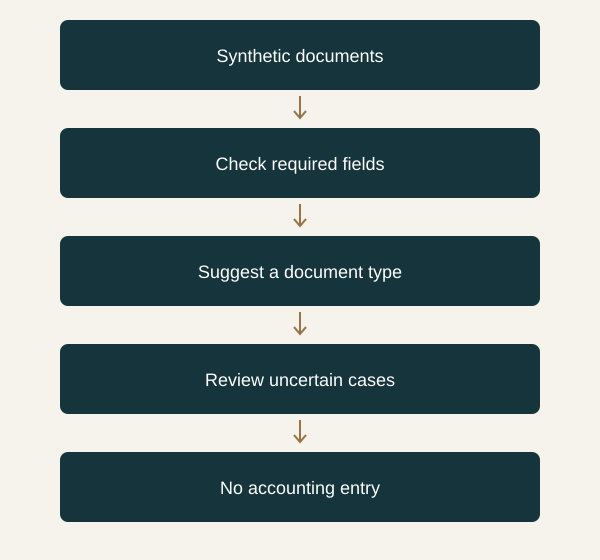

Why this caught my attention
When I imagine building an automated finance workflow, I tend to picture the final spreadsheet. But there are smaller decisions before anything reaches it. Is this document an invoice, a credit note, or something that needs a closer look? Does it belong in this reporting period? Is enough information present to continue?
These are the parts I would like to understand better. A paragraph explaining a document might be helpful to a person, while a workflow needs a clear next step. OpenAI says developers can supply text or images and use the answers to classify material or route requests. I see a possible fit with that earlier, less visible part of financial-data processing.
How I would use it
I would begin with a small set of synthetic documents and three labels: invoice, credit note and review needed. I would define what each label means before asking any model to choose. The review category matters to me because forcing an incomplete document into a neat label would only push the uncertainty further downstream.
In a proposed n8n experiment, the input would pass through basic file checks, then classification, then a queue for my review. It would stop before posting anything to an accounting system. I have not verified a native n8n connection to this API, and the announcement's preview status does not establish that I can use it today.
I would also compare the idea with a simple rules-based approach. If a consistent document template already contains a reliable type field, a model could be an unnecessary complication. The useful question is whether it handles ambiguous inputs well enough to justify the extra moving parts. A restricted answer format alone cannot establish that the answer is right.
Where I want to take this
I would record incorrect labels and time spent resolving them, especially cases where an invoice and a credit note are confused. I want to become more comfortable designing the boundary between routine processing and judgment. That seems like a practical way to combine finance with automation: understand the business meaning first, then decide how much of the repetitive work a tool can responsibly take over. My next check would be the API's current access terms and documentation before attempting an integration.
A workflow I would like to explore

Sources
- OpenAI: official announcement — OpenAI · Published 2026-09-29; accessed 2026-10-03
- TechCrunch: discovery report — TechCrunch · Published 2026-09-30; accessed 2026-10-03